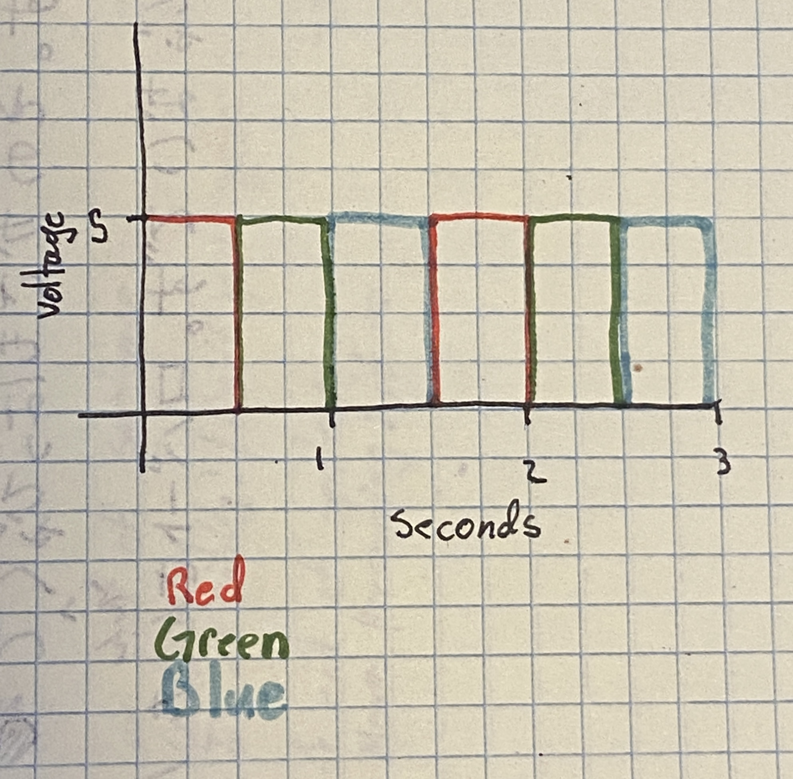

On the left you can see a gif of the assignment working. It blinks through the three LEDs and then repeats the process
On the left you can see a gif of the assignment working. It blinks through the three LEDs and then repeats the process
/*
Blink
There are three LEDs, using pins 13 through 11.
It turns on and off pin 13, then does the same for 12, and lastly the same for 11.
It will continue this loop forever.
modified 8 May 2014
by Scott Fitzgerald
modified 2 Sep 2016
by Arturo Guadalupi
modified 8 Sep 2016
by Colby Newman
modified 8 Jan 2024
by Andrew Doty
*/
// the setup function runs once when you press reset or power the board
void setup() {
pinMode(LED_BUILTIN, OUTPUT); // initialize digital pin LED_BUILTIN as an output.
}
// the loop function runs over and over again forever
void loop() {
digitalWrite(13, HIGH); // turn the LED connected to the 13th pin on
delay(500); // wait for half a second
digitalWrite(13, LOW); // turn the LED connected to the 13th pin off
digitalWrite(12, HIGH); // turn the LED connected to the 12th pin on
delay(500); // wait for half a second
digitalWrite(12, LOW); // turn the LED connected to the 13th pin off
digitalWrite(11, HIGH); // turn the LED connected to the 11th pin on
delay(500); // wait for half a second
digitalWrite(11, LOW); // turn the LED connected to the 11th pin off
}
I picked these values for the resistors because I wanted the LEDs to get progressively darker. I also knew that I wanted to keep the current below 20 mAh. So I started with the two resistors that would get me close to 20 mAh with a red led being powered by 5v. This ended up being two 100 ohm resistors. From there I just looked through the kit for the next largest resistor which was the 220 one. The next largest was then the 330 one, so I used that for the darkest. I also paired the 330 one with a blue LED which decreased the voltage more than the other LEDs.
1: Graph where the X axis is time and the Y axis is voltage across the LEDs.
2: How many LEDs could you blink independently with your Arduino? How much current would that draw?
You could blink up to the number of pins on the Arduino, which is 14. But you have to be careful not to draw too much current. Looking online an Arduino can handle 200 mA max so if you did 14 mA per pin then you would be fine. If you were to run them all at 20 mA like we have been doing then it would be 280 mA, too many for the Arduino.
3: How fast do you need to blink your LEDs until you no longer can tell that they are blinking?
I started at 200 ms then went down, around 15 ms it became harder to see. It looked like it never completely turned off, but it was still getting darker and lighter. But that effect stopped completely around 10-11 ms. At that point it looked the same as when it stays on.